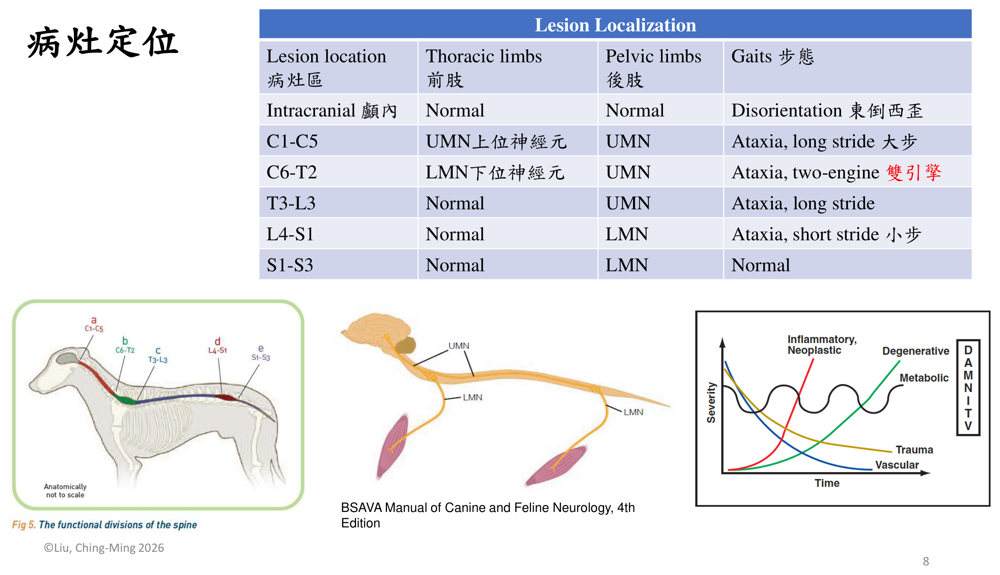
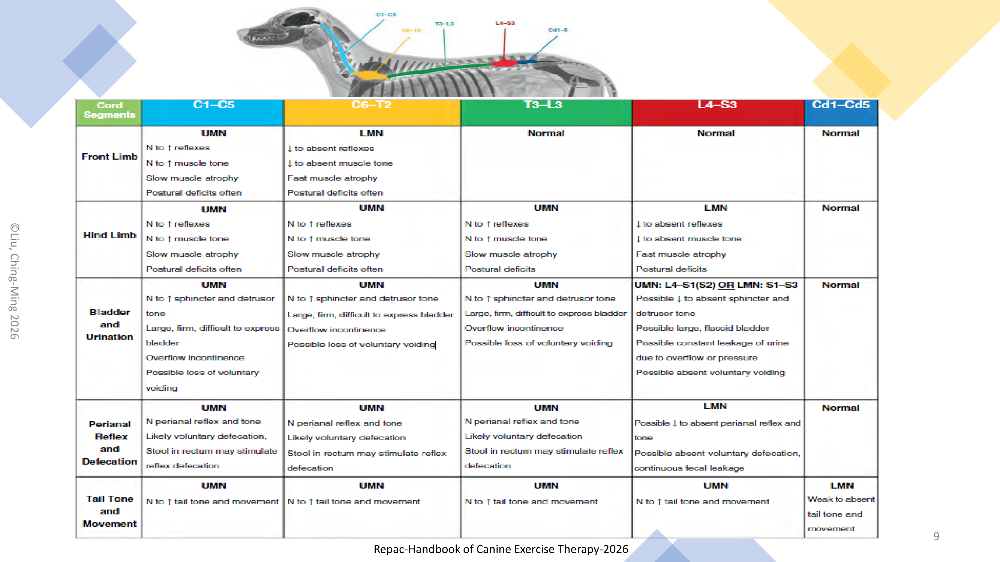
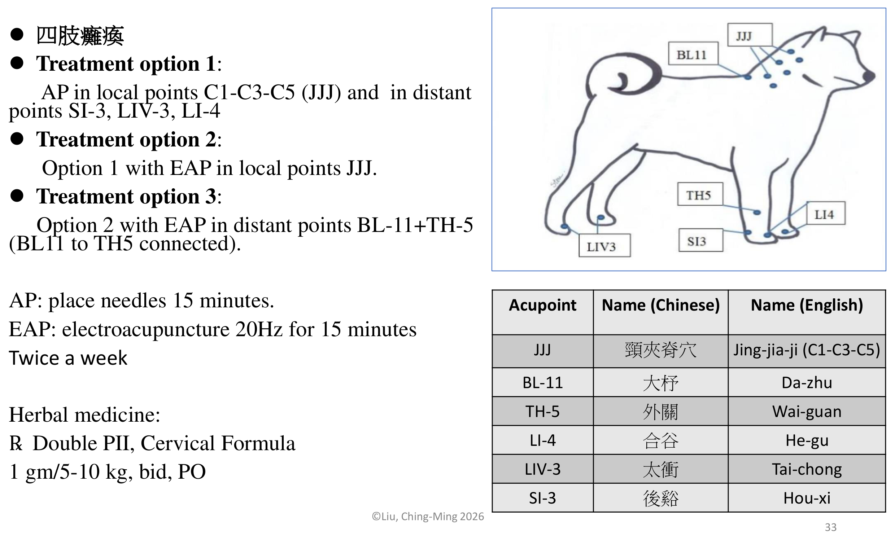
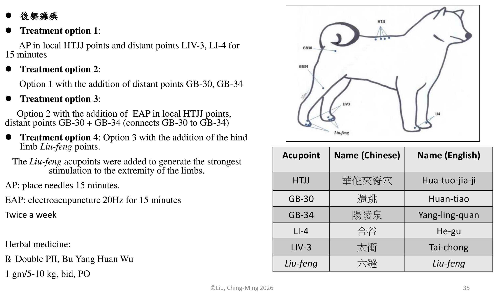
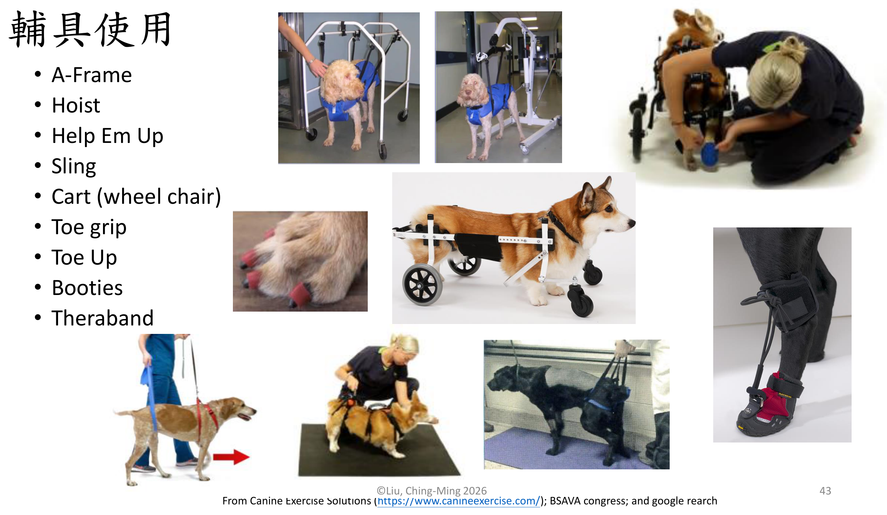
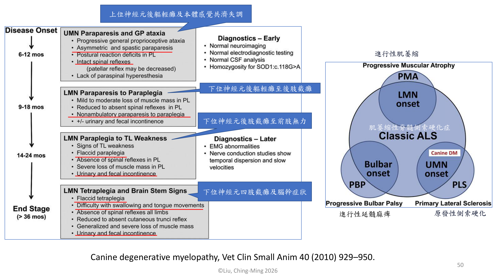
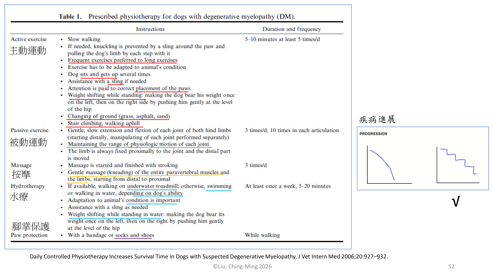

重點摘要
這份講義的主線是「一套通用的復健邏輯，套用在一長串常見神經科疾病上」。先建立兩個基礎工具：①病灶定位——用四肢步態表現反推病灶在哪一段脊髓／腦；②四階段復健框架（急性期→增生期→鞏固期→組織期）——幾乎每一種神經疾病的復健方案都是套用同一套時間軸，只是每個階段的動作內容依疾病特性微調。接著逐一介紹十餘種臨床常見的神經疾病（從頸椎不穩定到坐骨神經損傷、前庭疾病），每種都遵循「病因／好發族群 → 診斷 → 是否手術 → 復健重點」的固定敘事。後半段轉向輔助治療工具箱（針灸、雷射、tPEMF、高壓氧）與居家運動／輔具，最後以篇幅最長的退化性脊髓病（DM）作為壓軸深入案例，串連基因致病機轉、分期、與「復健強度確實能延長存活期」的實證研究。讀這份講義的訣竅是：先把病灶定位表與四階段框架記熟，之後每種疾病只需要記「跟通用框架不一樣的地方」即可，不需要每種疾病都從頭硬背。點下方任一分類可直接跳到該小節。
步態反推脊髓分段
所有疾病共用的時間軸
13 種常見神經疾病
分級與診斷流程
針灸／雷射／tPEMF／HBOT
PNF、輔具、居家調整
機轉、分期、存活期實證
- 病灶定位靠「前肢＋後肢步態組合」反推：C1-C5 病灶前後肢皆為 UMN；C6-T2 病灶前肢 LMN＋後肢 UMN（「雙引擎」步態）；T3-L3 病灶前肢正常＋後肢 UMN；L4-S1 病灶前肢正常＋後肢 LMN——這張表是全份講義的定位基礎，務必先記熟。
- 幾乎所有神經疾病的復健方案都套用同一套「急性期→增生期→鞏固期→組織期」四階段框架（約對應第 1–5 天／5–21 天／21–60 天／61 天以後），差異只在於每個階段放什麼動作——用這個框架記憶可以大幅減少死背量。
- Compressive vs Non-compressive 是椎間盤疾病分類的核心概念：Hansen type I（extrusion）、type II（protrusion）與 HNPE 屬於「壓迫性」；ANNPE（又稱 Hansen type III）與 FCE（缺血性脊髓病）屬於「非壓迫性」。2025 年回溯性研究顯示嚴格限制運動與否，對 ANNPE/HNPE/FCE 的預後並無顯著差異。
- 深層痛覺消失（deep pain loss）是 IVDD 最關鍵的預後指標：超過 48 小時的深層痛覺喪失，預後明顯不良。
- 前庭疾病常被飼主誤認為「中風」：典型表現為嚴重共濟失調（甚至跌倒）、頭傾、眼振（無 Horner's syndrome）、嘔吐；好發於 8 歲以上大型犬，診斷靠排除法。
- 針灸處方遵循「由簡入繁」的四級治療選項邏輯：從單純 AP（局部＋遠端穴位）逐步疊加 EAP（電針）與更多遠端穴位，四肢癱瘓與後軀癱瘓各有專屬處方組合，須搭配中藥方（如 Double PII）。
- 退化性脊髓病是本章實證等級最高的案例：Kathmann 2006 的研究顯示完全不復健、中度復健、積極復健三組的存活期分別是 55 天、130 天與 255 天——復健強度與存活期呈現明確的量效關係，是說服飼主積極復健的最有力數據。
解剖學與病灶定位 Anatomy & Lesion Localization
神經科復健的第一步永遠是定位病灶——因為復健方案、預後判斷都建立在「病灶在哪一段」之上。
本體感覺與步態相關傳導路徑
- 本體感覺路徑（Conscious proprioceptive pathway）：經薄束（fasciculus gracilis）與楔束（fasciculus cuneatus）上行，依序經延髓、腦橋、中腦、間腦到大腦；小腦則負責協調運動與平衡。
- 步態產生（Gait generation）相關脊髓神經束：前庭脊髓束（vestibulospinal tract）、網狀脊髓束（reticulospinal tract）、紅核脊髓束（rubrospinal tract）、皮質脊髓束（corticospinal tract）共同參與步態的產生與調控。
病灶定位表（依步態表現分段）重要
顱內病灶與脊髓各分段病灶會呈現截然不同的前肢／後肢／步態組合，是神經科理學檢查後第一個要建立的判斷：
| 病灶區 Lesion location | 前肢 Thoracic limbs | 後肢 Pelvic limbs | 步態 Gaits |
|---|---|---|---|
| 顱內 Intracranial | Normal | Normal | Disorientation 東倒西歪 |
| C1–C5 | UMN 上位神經元 | UMN | Ataxia, long stride 大步 |
| C6–T2 | LMN 下位神經元 | UMN | Ataxia, two-engine 雙引擎 |
| T3–L3 | Normal | UMN | Ataxia, long stride |
| L4–S1 | Normal | LMN | Ataxia, short stride 小步 |
| S1–S3 | Normal | LMN | Normal |

依脊髓分段的詳細神經學徵象
除了步態，各分段病灶在前肢、後肢、膀胱排尿、會陰反射與尾巴張力上也各有特徵性表現，是理學檢查時交叉驗證病灶定位的依據：

神經功能恢復順序 Neurodevelopmental Sequence (NDS)
NDS 是所有幼犬（與復健中患犬）發展／恢復正常步行能力的必經邏輯順序，復健方案的階段設計基本上就是沿著這條順序推進：
患犬必須能依序完成「側躺→趴正→坐立→站立→行走」的轉換，才算具備正常步行能力；復健訓練中常見的「坐站練習（sit to stand）」「趴坐轉換（down to sit）」正是針對這條發展順序設計的功能性訓練動作。
復健四階段框架 The Four-Phase Rehabilitation Model
後面十餘種神經疾病的復健方案幾乎都套用同一套四階段時間軸，這是全份講義最重要的「通用骨架」——先記熟這張表，後面每種疾病只需要記差異點。
| 階段 | 時間 | 目標 | 典型處置 |
|---|---|---|---|
| 急性期 Acute | 第 1–5 天 | 促進修復（promote regeneration） | 疼痛管理、擺位（positioning）、按摩、PROM、CP exercises |
| 增生期 Proliferative | 第 5–21 天 | 活動所有關節與肢體 | 按摩、PROM、重心偏移（weight shift）、協助站立 |
| 鞏固期 Consolidation | 第 21–60 天 | 恢復協調性與動作 | 搖擺枕頭／平衡板、協助站立、AROM |
| 組織期 Organization | 第 61 天以後 | 強化核心與背部肌群 | 坐站練習、give-me-5、繩索行走、水中跑步機（UWTM） |
下一節「常見神經科疾病復健方案」中，每種疾病只列出與此通用框架不同、值得特別記憶的差異點（例如某疾病的急性期特別強調刺激反射、或組織期特別限制爬樓梯），沒有特別註記的階段即代表沿用本表的通用處置。
常見神經科疾病復健方案 Common Neurological Diseases for Rehab
依講義順序列出 13 種臨床常見神經疾病；每張卡片的「復健特色重點」只列出與上方四階段通用框架不同之處。
總覽比較表
| 疾病 | 好發族群／病因 | 是否手術 | 預後關鍵 |
|---|---|---|---|
| A/A（C1/C2）不穩定 | 先天性或創傷性 | 可手術固定，或頸圈外固定 | 依穩定程度而異 |
| CCSM（Wobbler） | 先天性（大型犬，如大丹）；椎間盤源性（中年犬，如杜賓） | 可手術 | 依壓迫程度 |
| IVDD type I | 軟骨營養不良品種（臘腸犬） | 手術病例 | 深層痛覺消失 >48h 預後差 |
| IVDD type II | 非軟骨營養不良品種，胸腰椎 | 多為非手術 | 10% 僅背痛無神經缺損 |
| ANNPE／HNPE／FCE | 創傷性脊髓挫傷／缺血性脊髓病 | 非手術 | 運動限制與否不影響預後（2025 研究） |
| 退化性脊髓病 DM | 遺傳性，SOD1 基因突變，T3-L3 | 非手術 | 中位存活期 6–12 個月 |
| 臂神經叢撕裂 | 強力後拉＋前肢外展創傷（如車禍） | 非手術（或截肢） | 依完全／部分撕裂而異 |
| 馬尾部症候群 | 神經根壓迫，退行性腰薦椎狹窄 | 可手術 | 大小便失禁為警訊 |
| 變形性脊椎病（骨刺） | 椎體骨贅形成壓迫脊神經 | 非手術 | 以疼痛控制為主 |
| 浣熊犬麻痺症 | 特發性腹側神經根軸突／髓鞘發炎 | 非手術，支持照護 | 3–6 週可自發痊癒 |
| 坐骨神經損傷 | L6-S2 起源神經損傷 | 可手術或保守治療 | 脛神經單獨受損預後較佳 |
| 前庭疾病 | 特發性，好發 8 歲以上大型犬 | 非手術，症狀治療 | 常自限，易被誤認中風 |
各疾病復健特色重點
寰樞椎不穩定，先天性或創傷性。診斷：理學檢查、X 光、CT、MRI。治療選項：手術固定、外固定、頸圈、針灸／中藥／雷射／PEMF＋復健。
復健特色：增生期加入「協助坐站、使用 harness/sling」；組織期特別強調禁止玩耍、禁止爬樓梯（避免頸部劇烈活動），以 sling walk 與 UWTM（水位至肘關節）進行核心與背部肌力訓練。
病因為 Type 2 椎間盤＋脊椎關節囊＋韌帶病變，分兩型：Osseous-associated CSM（先天性，好發年輕大型犬如大丹犬，C1-C5）與Disc-associated CSM（椎間盤突出，好發中年犬如杜賓犬，C6-T2）。診斷 MRI 優於 CT。
復健特色：增生期加入「slow cookie stretch on neck」（緩慢頸部伸展誘導動作）與 harness/sling 輔助坐站；鞏固期加入 rebounding（彈性反覆刺激）與 sling walk。
好發軟骨營養不良品種（如臘腸犬），表現輕癱到四肢／後肢癱瘓不等，屬手術病例。深層痛覺持續喪失超過 48 小時，預後不良，是本病最重要的預後指標。
復健特色：急性期加入「刺激足部反射、重心偏移、站立誘導」；增生期若有自主運動出現，加入 UWTM；鞏固期加入 weave poles（繞樁）強化協調；組織期強調提高運動強度＋游泳。
好發非軟骨營養不良品種，多發生於胸腰椎；約 10% 病例僅有背痛而無神經學缺損，多以非手術治療為主。
復健特色：急性期強調「避免特定動作」；鞏固期加入跑步機、UWTM、cavaletti rails（跨欄步行）；組織期強調游泳、UWTM，並可能需要終身復健治療。
壓迫性 Compressive
- Hansen type I（extrusion）椎間盤破裂
- Hansen type II（protrusion）椎間盤突出
- HNPE（Hydrated Nucleus Pulposus Extrusion）水合髓核脫出——水合的硬膜外椎間盤物質壓迫脊髓
非壓迫性 Non-compressive
- ANNPE（Acute Non-compressive Nucleus Pulposus Extrusion）急性非壓迫性髓核脫出——創傷性脊髓挫傷，又稱「high-velocity-low-impact disc extrusion」或 Hansen type III
- FCE（Fibrocartilaginous Embolism）纖維軟骨性栓塞——又稱缺血性脊髓病（ischemic myelopathy）
針對 40 隻犬罹患 ANNPE、HNPE 或 FCE，追蹤出院後 4 週的疾病復發與復原情形：嚴格限制運動休息組（n=18）與無特別限制活動組（n=22）比較，復發與復原程度並無顯著差異。結論：讓這類動物適度運動並不影響其預後——這是臨床上常被問到「要不要嚴格籠內休息」的實證依據。
脊髓某段動脈／靜脈血液供應被纖維軟骨栓塞阻斷，表現輕癱到四肢／後肢癱瘓，發作當下動物常會突然尖叫（yelp）。非手術病例，診斷靠臨床檢查＋MRI。
復健特色：增生期若有自主運動出現加入 UWTM；鞏固期加入跑步機與 cavaletti rails；組織期加入游泳與 UWTM。
臂神經叢起源自 C6-T2 脊髓節段；因強力向後拉扯合併前肢外展的創傷（例如車禍）造成撕裂，分完全撕裂（C6-T1）與部分撕裂（C6-C7 或 C8-T1）。診斷：理學檢查、EMG、CT、MRI。非手術病例，選項包含截肢或復健。
復健特色：各期皆以按摩、PROM 為主；組織期加入功能性訓練——「懸掛零食誘導前爪撥動（pawing at a treat dangling）」、give-me-5、爬樓梯。
神經根壓迫，常見病因為退行性腰薦椎狹窄（Degenerative L/S Stenosis, DLSS）；典型表現為大小便失禁、尾巴下垂。診斷：理學檢查、CT、MRI，可手術。
復健特色：急性、增生期皆強調疼痛管理與術後腫脹照護；鞏固期加入 AROM、跑步機、UWTM、cavaletti rails；組織期加入 UWTM 與游泳。
椎體上形成骨贅（osteophyte），壓迫脊神經並造成疼痛性肌肉緊繃。診斷：理學檢查、X 光。非手術病例。
復健特色：急性期以簡單 CP exercises 為主；增生期加入短時間 UWTM＋控制性行走；鞏固期加入不同地面行走訓練（增加本體感覺挑戰）；組織期加入游泳與 UWTM。
腹側神經根軸突與髓鞘的特發性發炎，表現由後往前進展的輕癱或癱瘓、合併 LMN 徵象，3–6 週內可自發痊癒是本病最重要的特徵。診斷：理學檢查、腦脊髓液（CSF）、電生理診斷。非手術，以支持照護為主。
復健特色：急性期目標是誘發屈肌反射（elicit the flexor reflex）；增生期加入站立與水中行走訓練；鞏固期加入 UWTM、陸上跑步機、穩定球運動、NMES（神經肌肉電刺激）。
坐骨神經整合 L6-S2 脊髓節段的神經根；受損後只剩股神經支配的股四頭肌（stifle extensor）維持功能，動物雖可負重但無法屈曲跗關節與趾骨，造成屈爪行走（knuckling）與蹠行姿勢（plantigrade stance），並有明顯肌肉萎縮；神經受壓迫時會有劇烈疼痛。診斷：理學檢查、EMG。可手術或保守治療。
復健特色：穿戴靴子與矯具保護、按摩、PROM、CP 與模式化運動（pattern exercises）、UWTM。只有脛神經受損的動物功能恢復較佳；坐骨神經或腓神經受累則較差；多數損傷屬於神經失用（neurapraxia）或軸突斷裂（axonotmesis），可望恢復功能性使用。
多為特發性，好發8 歲以上大型犬；飼主常誤以為是「中風」。典型表現：嚴重共濟失調甚至跌倒、頭傾、眼振（無 Horner's Syndrome）、嘔吐；可能出現「矛盾性（paradoxical）」表現。診斷靠理學檢查＋排除其他疾病。治療：症狀支持（止吐藥）＋針灸與復健。
復健特色：急性期目標是誘發屈肌反射，按摩、PROM，讓動物休息並避免興奮刺激；增生期加入站立訓練；鞏固期加入緩慢步行＋UWTM 協調動作訓練；組織期加入不穩定運動模式訓練提高運動強度。
癱瘓總論：分級與診斷流程 Paralysis Grading & Diagnostic Workflow
在進入個別疾病細節之前，先建立「癱瘓」這個臨床名詞本身的分級與診斷邏輯。
什麼是癱瘓（Paralysis）？
- 癱瘓一般指脊髓損傷或壓迫導致肢體自主動作功能出現問題，依程度分為輕癱（paresis）、截癱（plegia）、癱瘓（paralysis）。
- 依分布範圍分類：四肢同時發生（tetra-）、單側偏癱（hemi-）、後半身癱瘓（para-），通常與病灶部位直接相關。
- 無深層痛覺（deep pain）表示預後不佳——這是貫穿全份講義最重要的預後指標。
- 其他核心概念：共濟失調（Ataxia）、無力（weakness）、上位神經元（UMN）與下位神經元（LMN）徵象。
癱瘓診斷流程
- CNS：顱內、C1-C5、C6-T2、T3-L3、L4-S1~3
- PNS（周邊神經系統）
- NMJ（神經肌肉接合處）
- 肌肉 Muscle
血液檢查、CT、MRI、腦脊髓液（CSF）分析、其他特殊檢查，依定位結果選擇對應的影像與實驗室工具，逐步縮小鑑別診斷範圍後才能得到最終診斷。
癱瘓復健治療與照顧總覽
不論病因為何，癱瘓動物的照護可拆成兩大類工具：
- 針灸 Acupuncture
- 雷射 Laser
- tPEMF（標地式脈衝式電磁場治療）
- HBOT（高壓氧治療）
- 運動復健 Therapeutic exercise
- 輔具使用 Assistive devices
- 居家環境調整 Home environment modification
輔助治療模式：針灸、雷射、tPEMF、HBOT
四種常用於神經科復健的輔助治療工具，各有明確的處方細節或實證研究支持。
針灸治療 Acupuncture
針灸處方依「四肢癱瘓」與「後軀癱瘓」分別設計，皆採「治療選項由簡入繁」的疊加邏輯——從單純局部＋遠端穴位的 AP（acupuncture），逐步疊加 EAP（electroacupuncture，電針）與更多遠端穴位。
- 選項 1：局部穴位 JJJ（頸夾脊穴，C1-C3-C5）＋遠端穴位 SI-3、LIV-3、LI-4
- 選項 2：選項 1 加上 JJJ 局部穴位的 EAP
- 選項 3：選項 2 加上遠端穴位 BL-11＋TH-5 的 EAP（BL11 與 TH5 相連）
AP 留針 15 分鐘；EAP 20Hz、15 分鐘；每週兩次。中藥方：Double PII、Cervical Formula，1 g／5–10 kg，一天兩次口服。

- 選項 1：局部穴位 HTJJ（華佗夾脊穴）＋遠端穴位 LIV-3、LI-4，留針 15 分鐘
- 選項 2：選項 1 加上遠端穴位 GB-30、GB-34
- 選項 3：選項 2 加上局部 HTJJ、遠端 GB-30＋GB-34（相連）的 EAP
- 選項 4：選項 3 加上後肢 Liu-feng（六縫）穴——目的是對肢體末端產生最強刺激
AP 留針 15 分鐘；EAP 20Hz、15 分鐘；每週兩次。中藥方：Double PII、Bu Yang Huan Wu，1 g／5–10 kg，一天兩次口服。

雷射治療 Laser
針對胸腰椎椎間盤突出（type I）手術術後病例，24 隻犬分為試驗組（術後復健＋雷射）與對照組（術後復健），使用4 級雷射照射術區，4 J/cm² 每日一次，連續 14 天，於術後 30 天與 60 天評估。結果：試驗組神經恢復量表進步更明顯，恢復行走時間由對照組 24 天縮短至試驗組 14 天。
t-PEMF 標地式脈衝式電磁場治療
針對半椎板切除術後病例，配合使用標地式脈衝磁波圈治療。53 隻犬分試驗組與對照組，住院期間每次 15 分鐘、一天 4 次；出院後居家持續使用，每次 15 分鐘、早晚各一次，共 1 週。6 週後評估：術區傷口癒合明顯較快，且止痛藥使用量減少。
HBOT 高壓氧治療
高壓氧治療具有多重神經保護作用：
減少氧化壓力
促進血管生成
調控發炎反應
減少神經系統水腫
其他效益：減緩神經病變痛、促進脊髓損傷修復、促進周邊神經再生、降低創傷性腦血管損傷、延緩運動神經元疾病發生。常用壓力艙設定為 1.4 ATA 或 2.0 ATA。
肢體復健運動方案與輔具 Limb Rehabilitation & Assistive Devices
從基本的關節活動與感覺刺激，到功能性運動訓練與居家輔具，是四階段框架中實際執行的動作內容庫。
肌肉、關節與本體感覺基礎項目
| 項目 | 頻率／時間 |
|---|---|
| PROM 被動關節活動 | 10–15 下 × 3–5 次／天 |
| Massage 按摩 | 15 分鐘 × 3 次／天 |
| Limb stretching 肢體伸展 | 15–20 分鐘 × 3 組 × 3 次／天 |
| Toe-grip 增加抓力 | — |
| Assisted standing 協助站立 | 2–5 分鐘 × 3–5 次／天 |
| Assisted ambulation 協助行走 | 5–15 分鐘 × 3–5 次／天 |
術後第 7 天開始 UWTM，2–3 分鐘／天，採低速高水位，之後視動物復原情況逐漸增加次數與阻力——這是水療介入時機與初始強度設定的具體參考值。
PNF（Proprioceptive Neuromuscular Facilitation）本體感覺神經促進術
用於促進神經肌肉反應的刺激技巧：
Tapping 拍、敲
Quick brushing 快速擦刷
Quick stretching 快速拉伸
Tickling paw 搔爪
Joint compression 關節按壓
Toe pinching＋withdrawal reflex 掐趾＋回縮反射
Tail stimulation 尾巴刺激
Rhythmic stabilization 節律性穩定
神經抑制（放鬆）術 Neuro-inhibitory Techniques
與 PNF 相反，用於降低過高張力／緩解緊繃的技巧：
Effleurage 輕撫法
Prolonged slow stretch 緩慢持續伸展
Light joint compression 輕度關節擠壓
Cryotherapy 冷療
Deep tendon pressure 肌腱深按
Rocking/oscillations 搖擺震盪
Digit flexion 腳趾屈曲
Kinesiology tape 肌內效貼紮
PNF 與神經抑制術是一對相反工具：張力低、反射弱時用 PNF「促進」；張力過高、肌肉緊繃痙攣時改用神經抑制術「放鬆」——考題常以情境描述動物的張力狀態，要求判斷該用哪一類技巧。
運動復健 Therapeutic Exercise
關節活動度、本體感覺、肌力、平衡
跨越橫桿（cavaletti）、復健球、平衡板、協助行走
居家運動復健：坐站練習、重心偏移、關節活動——這三項是最容易讓飼主在家自行執行、不需特殊器材的核心動作。
輔具使用 Assistive Devices
常見輔具種類：A-Frame（助行架）、Hoist（吊掛式輔助器）、Help 'Em Up 專用吊帶、Sling（懸吊帶）、Cart／輪椅、Toe grip／Toe Up（防滑趾套）、Booties（保護靴）、Theraband（彈力帶）。

居家環境調整 Home Environment Modification
包含地面防滑處理、限制爬樓梯、提供斜坡輔助上下車／床鋪等，目的是降低患犬在日常生活中意外滑倒或二次受傷的風險，是復健方案能否長期成功的關鍵配套。
退化性脊髓病深入 Degenerative Myelopathy (DM)
講義以退化性脊髓病作為壓軸案例深入介紹，串連基因致病機轉、分期系統，與復健強度影響存活期的實證研究——是全份講義實證等級最高、也最完整的疾病案例。
什麼是退化性脊髓病（漸凍症）？
- 退化性脊髓病是一種運動神經元疾病，造成後軀逐漸癱瘓，病程不痛但進展緩慢且不可逆。
- 與 SOD1（superoxide dismutase）基因突變有關。
- 此基因突變引起脊髓白質髓鞘脫失（demyelination）、軸突退化（axonal degeneration）、腰椎脊髓背神經根毀損；最新研究顯示也影響腦部紅核（red nucleus），進而影響步態產生（gait generation）。
好發品種
German Shepherd（德國牧羊犬）、Pembroke Welsh Corgi（潘布魯克威爾斯柯基犬）、Boxer（拳師犬）、Wire Fox Terrier（剛毛獵狐㹴）
Pembroke Welsh Corgi、Boxer、Chesapeake Bay Retriever（乞沙比克海灣獵犬）、German Shepherd、Rhodesian Ridgeback（羅得西亞背脊犬）、Bernese Mountain Dog（伯恩山犬）
診斷
- 臨床症狀（Clinical signs）
- 基因突變檢測：SOD1 mutation，A/A 基因型為高風險（at risk），N/A 為帶因者（carrier）
- MRI／CSF：主要用於排除其他疾病
- 鑑別診斷：IVDD、腫瘤、發炎性疾病
- 確定診斷需靠組織病理學（histopathology）——臨床上實務為排除性診斷
臨床分級
後肢無力，走路步態改變，尾巴位置改變，後肢磨地，後趾甲磨損不均，起立困難
站立困難，後肢窄距，站立時後肢搖晃，腳背著地頻率增加，後肢交叉打架，可能出現排糞失禁（尤其夜間睡眠時）
尾巴沒活動，站立或走路經常跌倒，跨越伸肌反射（cross extensor reflex）異常，後肢失去自主運動，糞尿失禁，完全需要協助起身
疾病進展時間軸與神經學分期（UMN→LMN 演進）

退化性脊髓病治療與照顧
Acupuncture 針灸
Laser 雷射
PROM／Massage
Pool／UWTM 水療
再加上治療性運動（therapeutic exercises）與輔具（assisted devices）。
復健強度與存活期的實證關聯重要
研究比較不同復健積極程度對疑似 DM 犬隻存活期的影響：
- 完全沒做復健：存活期 55 天
- 中度復健（居家運動復健每天 3 次，水療每週 1 次）：存活期 130 天
- 積極復健（居家運動復健每天 3–5 次，每天 3 次按摩及 PROM，或每天水療）：存活期 255 天
復健強度與存活期呈現明確的量效關係，是臨床上說服飼主投入積極居家復健最有力的數據依據。
詳細物理治療處方表

游泳與水中跑步機（UWTM）的差異
- 不負重運動
- 增進自主關節活動
- 對上半身有益
- 增進核心及軀幹鍛鍊
- 動物較容易感到有趣、配合度高
- 可調整式負重運動（依水位調整負重比例）
- 增進自主關節活動
- 本體感覺訓練
- 增進平衡能力
- 適合術後早期即介入的運動
其他照護重點
- 腳背反摺翻正：DM 犬常見腳背翻折（knuckling）未即時矯正，需訓練照顧者留意並協助翻正。
- 保護及止滑：地面防滑處理、穿戴保護靴，降低摩擦傷與跌倒風險。
- 輔具協助：依病期進展適時導入吊帶、輪椅等輔具，維持生活品質。
發病年齡與預後
- 發病多在 5 歲以上，大型犬平均約 9 歲發病，多數 8 歲以上；柯基犬平均發病年齡約 11 歲。
- 整體預後不佳，治療目標多設定為延長生命至少 6 個月。
雷射治療劑量與 DM 存活期的實證研究
比較不同雷射治療條件對犬退行性脊髓病的效果：
| 方案 | 雷射參數 | 照射方式 | 照射時間 |
|---|---|---|---|
| A 組（n=6） | 3 級雷射，904nm，0.5W，8 J/cm²／點，20 點 | 點對點方式，治療面積 650–1000 cm² | 5 分 20 秒 |
| B 組（n=14） | 4 級雷射，980nm，6–12W，14–21 J/cm² | 掃描方式，治療面積 650–1000 cm² | 25 分 15 秒 |
兩組皆合併復健治療（醫院及居家運動復健）。結果：B 組（高功率、較長照射時間）由症狀發生至安樂死時間為 38.2 個月，顯著長於 A 組的 11.09 個月；由症狀發生至無法負重後軀輕癱，B 組為 31.76 個月，同樣顯著長於 A 組的 8.79 個月。結論：較高功率、較長時間的雷射治療方案可顯著延緩病程進展並延長存活時間。
學習重點整理
考試／臨床實務角度整理，複習前先快速掃過本節。
練習題 Practice Quiz
涵蓋病灶定位、四階段框架、常見疾病、輔助治療與退化性脊髓病重點，先自己作答再點「顯示答案」核對。
前肢正常、後肢 UMN、步態為 long stride ataxia，對應病灶定位表中的 T3-L3 節段；C1-C5 前後肢皆為 UMN，C6-T2 前肢為 LMN（雙引擎步態），L4-S1 後肢為 LMN（short stride）。
講義中列出的十餘種神經疾病，其復健方案幾乎都套用同一套約 1–5 天／5–21 天／21–60 天／61 天以後的四階段時間軸，只是每個階段的具體動作依疾病特性略有調整。
Hansen type I、type II 與 HNPE 皆屬於壓迫性（有實體物質壓迫脊髓）；FCE（纖維軟骨性栓塞，又稱缺血性脊髓病）與 ANNPE（又稱 Hansen type III）才屬於非壓迫性分類。
浣熊犬麻痺症（急性特發性多發性神經根炎）為非手術病例，以支持照護為主，多數病例可在 3–6 週內自發痊癒，是講義中少數強調「等待自然恢復」的神經疾病。
坐骨神經損傷後，僅剩股神經支配的伸膝肌群（股四頭肌）維持功能，因此動物仍可負重，但無法屈曲跗關節與趾骨，形成屈爪行走（knuckling）與蹠行姿勢（plantigrade stance），並伴隨明顯肌肉萎縮。
前庭疾病典型表現為眼振「不合併」Horner's Syndrome；若眼振合併 Horner's Syndrome，需考慮其他病因（如中耳／內耳病變）。共濟失調、頭傾與嘔吐皆為典型前庭疾病表現。
PNF 用於「促進」神經肌肉反應，適用於張力過低、反射較弱的患者，希望誘發更強的肌肉收縮與神經反應，例如 tapping（拍敲）、quick stretching（快速拉伸）、toe pinching with withdrawal reflex（掐趾誘發回縮反射）。神經抑制術則用於「降低」過高的張力或緩解緊繃痙攣，適用於張力過高、肌肉緊繃的患者，例如 effleurage（輕撫法）、prolonged slow stretch（緩慢持續伸展）、cryotherapy（冷療）。兩者是一組相反的工具，須依患者當下的肌肉張力狀態選擇。
(1) 檢查建議：DM 為排除性診斷，應先以 MRI／CSF 排除 IVDD、腫瘤、發炎性疾病等鑑別診斷；同時建議進行 SOD1 基因突變檢測（A/A 為高風險基因型），並持續追蹤臨床症狀變化，確定診斷仍須依賴組織病理學，但臨床實務上多以排除法＋基因檢測＋典型病程做出推定診斷。
(2) 分期判斷：後肢無力、步態改變、尾巴位置改變、後肢磨地符合 Stage 1 的典型表現（尚未出現站立困難、後肢窄距或失禁等 Stage 2／3 徵象）。
(3) 說服飼主的實證依據：可引用 Kathmann 2006 的研究數據——完全不復健的犬隻平均存活期僅 55 天，中度復健（居家運動每天 3 次＋水療每週 1 次）可達 130 天，而積極復健（居家運動每天 3–5 次＋每天按摩／PROM 或每天水療）可延長至 255 天，顯示復健強度與存活期存在明確的量效關係，及早開始積極復健對延長生命品質與時間有實質幫助。
(1) 預後意義：深層痛覺（deep pain）消失超過 48 小時是 IVDD 最重要的預後不良指標，代表脊髓損傷程度較嚴重，神經功能完全恢復的機會明顯降低，需誠實與飼主溝通此風險。
(2) 急性期處置：依講義 IVDD type I 的復健特色，急性期應著重疼痛管理、傷口腫脹照護、按摩、PROM，並加入刺激足部反射、重心偏移、誘導站立等處置，目的是在深層痛覺尚未恢復前，盡量維持肌肉量與關節活動度，並持續監測反射與痛覺恢復狀況。
(3) 飼主溝通：應說明深層痛覺消失時間越長，預後越保守，但仍建議依四階段框架持續復健（增生期視自主運動出現與否調整 UWTM 介入時機、鞏固期加入 weave poles、組織期視恢復狀況考慮游泳），並強調復健的目標可能是「盡量爭取功能恢復」而非保證完全康復，同時討論轉診或進階影像／再次手術評估等替代方案。